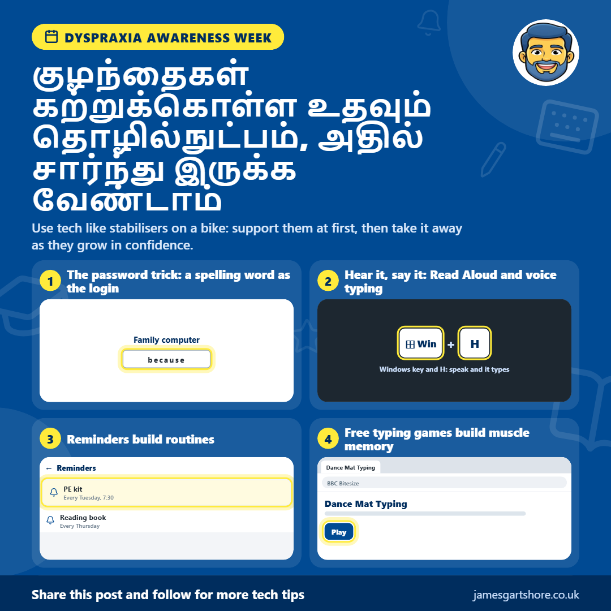

டிஸ்ப்ராக்ராக்ஸியா வாரம்
By James Gartshore · · ஆரோக்கியம் மற்றும் நல்வாழ்வு
See the old version of this poster
 Download the old version
Download the old version
হ্যালো সবাইকে, এই সপ্তাহে ডিসপ্র্যাক্সিয়া সচেতনতা সপ্তাহ, তাই আমি আপনাদের জানাতে চেয়েছি যে প্রযুক্তি কীভাবে ডিসপ্র্যাক্সিয়া আক্রান্ত শিশুদের সাহায্য করতে পারে। ধারণাটি হল তাদের শেখার জন্য প্রযুক্তি ব্যবহার করা, এমন কিছু যা তারা পরে নির্ভর করে।
ডিসপ্র্যাক্সিয়া সমন্বয় এবং চলাফেরায় প্রভাব ফেলে, এবং এটি হাতের লেখা, বানান এবং সংগঠিত থাকার মতো বিষয়গুলিকে কঠিন করে তুলতে পারে। ভালো খবর হল ফোন এবং কম্পিউটারে অনেক বিনামূল্যের সরঞ্জাম রয়েছে যা সঠিক উপায়ে ব্যবহার করা হলে সাহায্য করতে পারে।
எழுத்துப்பிழையை சரிசெய்ய ஒரு எளிய வழி என்னவென்றால், உங்கள் குழந்தை ஒரு வார்த்தையை கடினமாகக் கருதும் ஒரு குடும்ப கணினியின் உள்நுழைவு கடவுச்சொல்லை, அருகில் ஒரு குறிப்பில் எழுதிக் கொடுங்கள். ஏனென்றால் அவர்கள் அதை தினமும் தட்டச்சு செய்வார்கள், அவர்கள் அந்த குறிப்பை படிப்படியாக குறைத்து சரிபார்க்கத் தொடங்குவார்கள், ஒரு நாள் அது அவர்களுக்குத் தேவையில்லாமல் போய்விடும். பிறகு அந்தக் குறிப்பை எடுத்துவிட்டு ஒரு புதிய வார்த்தையைத் தேர்ந்தெடுங்கள். இதை ஒரு குடும்ப கணினியில் மட்டுமே செய்யுங்கள், மின்னஞ்சல், வங்கி அல்லது வேறு எந்த உண்மையான கணக்குகளுக்கும் இதை ஒரு வார்த்தை எளிதில் யூகிக்க முடியும் என்பதால் செய்யாதீர்கள்.
வார்த்தைகளைக் கேட்பதும் உதவும். Microsoft Edge மற்றும் Word ஆகிய இரண்டிலும் ஒரு இலவச வாசிப்பு வசதி (Read Aloud feature) உள்ளது, இது ஒவ்வொரு வார்த்தையையும் ஒளிரச் செய்து உரையை வாசிக்கிறது, இதனால் குழந்தைகள் அதைப் பின்பற்ற முடியும். இதுவும் இதற்கு நேர்மாறாகவும் வேலை செய்கிறது. குரல் மூலம் தட்டச்சு (voice typing) மூலம், அவர்கள் ஒரு வார்த்தையைச் சொல்லலாம் மற்றும் அது திரையில் தோன்றுவதைப் பார்க்கலாம், இது ஒரு வார்த்தை எப்படி ஒலிக்கும் மற்றும் அது எவ்வாறு எழுதப்படுகிறது என்பதை இணைக்க உதவுகிறது. ஒரு Windows கணினியில், Windows கீ மற்றும் H ஐ ஒன்றாக அழுத்தவும், மேலும் ஒரு தொலைபேசியில், விசைப்பலகையில் உள்ள மைக்ரோஃபோனைத் தட்டவும்.
தட்டச்சு என்பது டிஸ்ப்ராக்ராக்ஸியா (dyspraxia) உள்ள குழந்தைகளுக்கு எழுதுவதை விட பெரும்பாலும் எளிதானது, மேலும் பயிற்சி செய்ய தட்டச்சு சோதனைகள் சிறந்த வழியாகும். அவர்கள் உண்மையான வார்த்தைகளைப் பயன்படுத்துவதால், அவற்றை மீண்டும் மீண்டும் தட்டச்சு செய்வது, எழுத்துப்பிழை இல்லாமல் இயல்பாக வரும் வரை, தசை நினைவகத்தை உருவாக்குகிறது. BBC Bitesize Dance Mat Typing தொடங்குபவர்களுக்குச் சிறந்தது, TypingClub இல் இலவச படிப்படியான பாடங்கள் உள்ளன, மேலும் Monkeytype மற்றும் 10FastFingers ஆகியவை பெரிய குழந்தைகளுக்கு அவர்களின் வேகத்தை சோதிக்கவும் அவர்களின் சிறந்த மதிப்பெண்ணை வெல்ல முயற்சிக்கவும் அனுமதிக்கின்றன.
ஒழுங்குபடுத்துவது ஒரு சவாலாகவும் இருக்கலாம், மேலும் தொலைபேசி நினைவூட்டல்கள் மற்றும் எளிய சரிபார்ப்புப் பட்டியல்கள் (checklists) குழந்தைகளுக்கு வழக்கங்களை உருவாக்க உதவலாம், உதாரணமாக செவ்வாய்க்கிழமை PE உடைகள் நினைவூட்டல். காலப்போக்கில், நினைவூட்டல் தேவையில்லாமல் அவர்கள் நினைவில் வைத்திருப்பார்கள் என்று பலர் உணர்கிறார்கள்.
இதை ஒரு பைக் ஸ்டெபிலைசர்கள் (stabilisers) போல நினைப்பது சிறந்தது. முதலில் தொழில்நுட்பத்தைப் பயன்படுத்தி அவர்களுக்கு ஆதரவ கொடுங்கள், பின்னர் அவர்களின் நம்பிக்கை வளரும்போது படிப்படியாக அதை அகற்றவும்.
இதை அமைப்பதில் உங்களுக்கு உதவி தேவைப்பட்டால், बस எனக்கு ஒரு செய்தியை அனுப்புங்கள் நான் உதவ என் சிறந்த முயற்சியைச் செய்வேன்.
இது உங்களுக்கு உதவியாக இருக்கும் என்று நம்புகிறேன், மேலும் இதை பயனுள்ளதாக இருக்கும் என்று நினைப்பவர்களுக்குப் பகிரத் தயங்காதீர்கள்.